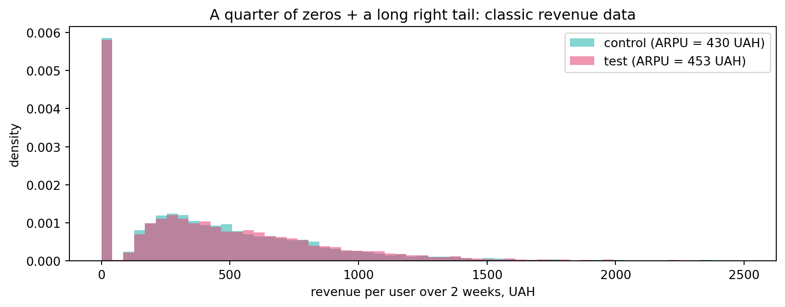
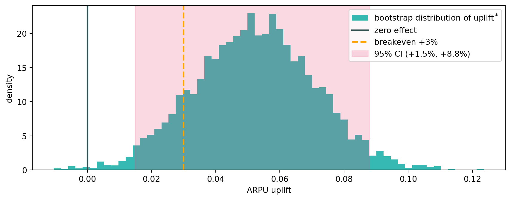
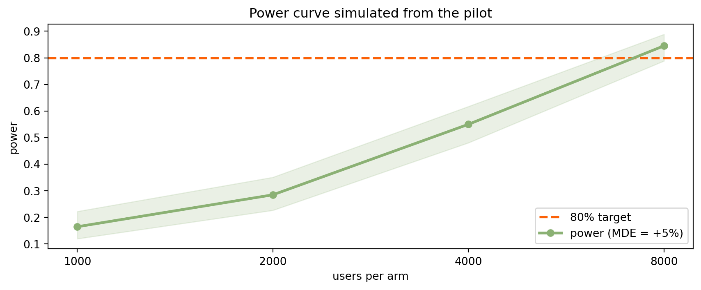

import warnings
warnings.filterwarnings("ignore")
import time
import numpy as np
import matplotlib.pyplot as plt
from scipy.stats import norm
from statsmodels.stats.proportion import proportion_confint
turquoise = "#20B2AA"
red = "#fb6107"
blue = "#181485"
green = "#8bb174"
gray = "#A0A0A0"
red_pink = "#e64173"
orange = "#FFA500"
slate = "#314f4f"
def arpu_sample(n, rng, uplift=0.0):
"""2-week revenue per user (ARPU), UAH: zeros + right skew.
~25% of users ordered nothing; active users place 1 + Pois(1.2)
orders with a lognormal basket. uplift multiplies active revenue.
"""
active = rng.random(n) < 0.75
orders = 1 + rng.poisson(1.2, n)
check = rng.lognormal(np.log(240), 0.40, n)
return np.where(active, orders * check * (1 + uplift), 0.0)Practice 9
Bootstrap
What we are doing today
In the lecture the bootstrap gave us a CI in minutes: the difference in P75 taxi waiting time. But a real A/B report is read on a different line: “by how many percent did revenue grow — and does the feature pay for itself?” Today we build the rest of the road from the lecture recipe to a finished decision:
- relative effect (uplift, %) — a CI for \(\theta_T/\theta_C - 1\), a statistic where both the numerator and the denominator are random;
- Poisson bootstrap — how industry (Google, Spotify) resamples a billion rows without holding them in memory;
- experiment design by simulation — power and MDE for metrics that have no power formula at all;
ab_report— the final tool: a three-zone decision against a breakeven threshold, probability of profitability, and expected value.
1 Part I — Uplift: how many percent did we win?
Case. GreenBowl runs a two-week Kyiv test of “Free delivery over 300 UAH”: 6000 users in control and 6000 in test. Finance did the math: the delivery subsidy will cost ≈3% of annual revenue, so the feature pays off only if it lifts ARPU by more than +3% — that is our breakeven. The CFO expects the answer in percent, not in hryvnias.
rng = np.random.default_rng(8)
control = arpu_sample(6000, rng) # old delivery pricing
test = arpu_sample(6000, rng, uplift=0.05) # free delivery over 300
print(f"ARPU control: {control.mean():.0f} UAH test: {test.mean():.0f} UAH")
print(f"zero-revenue users: {np.mean(control == 0):.0%}")ARPU control: 430 UAH test: 453 UAH
zero-revenue users: 25%Code
fig, ax = plt.subplots(figsize=(9, 3.6))
bins = np.linspace(0, 2500, 60)
ax.hist(control, bins=bins, density=True, alpha=0.55, color=turquoise,
label=f"control (ARPU = {control.mean():.0f} UAH)")
ax.hist(test, bins=bins, density=True, alpha=0.55, color=red_pink,
label=f"test (ARPU = {test.mean():.0f} UAH)")
ax.set_xlabel("revenue per user over 2 weeks, UAH")
ax.set_ylabel("density")
ax.set_title("A quarter of zeros + a long right tail: classic revenue data")
ax.legend()
plt.tight_layout()
plt.show()
The trap: \(\bar X_C\) is a random variable too. Dividing the bounds by a “frozen” number pretends the denominator is known exactly and throws away part of the uncertainty. The ratio
\[ \text{uplift} = \frac{\theta_T}{\theta_C} - 1 \]
is a statistic of its own, with no textbook CI formula. But we own the universal recipe: compute the statistic as a whole on every pair of bootstrap samples — and assemble the central CI.
1.1 Tool v1: uplift_ci
def uplift_ci(control, test, stat=np.mean, alpha=0.05, B=4000, seed=42):
"""Central bootstrap CI for the relative effect stat(T)/stat(C) - 1.
stat must accept axis (np.mean, np.median, ...). Resample WITHIN
each group, independently (the lecture rule!).
"""
rng = np.random.default_rng(seed)
c, t = np.asarray(control, float), np.asarray(test, float)
up_hat = stat(t) / stat(c) - 1
c_star = stat(rng.choice(c, size=(B, c.size), replace=True), axis=1)
t_star = stat(rng.choice(t, size=(B, t.size), replace=True), axis=1)
up_star = t_star / c_star - 1 # the ratio AS A WHOLE
q_lo, q_hi = np.quantile(up_star, [alpha/2, 1 - alpha/2])
return {"uplift": up_hat, "ci": (2*up_hat - q_hi, 2*up_hat - q_lo),
"star": up_star}
t0 = time.perf_counter()
r = uplift_ci(control, test)
elapsed = time.perf_counter() - t0
lo, hi = r["ci"]
print(f"ARPU uplift: {r['uplift']:+.2%} 95% CI: ({lo:+.2%}, {hi:+.2%})")
print(f"⏱ execution time: {elapsed:.2f} s")ARPU uplift: +5.21% 95% CI: (+1.48%, +8.79%)
⏱ execution time: 0.23 sCode
fig, ax = plt.subplots(figsize=(9, 3.6))
ax.hist(r["star"], bins=60, density=True, color=turquoise, alpha=0.9,
label=r"bootstrap distribution of uplift$^*$")
ax.axvline(0, color=slate, lw=2, label="zero effect")
ax.axvline(0.03, color=orange, lw=2, ls="--", label="breakeven +3%")
ax.axvspan(lo, hi, color=red_pink, alpha=0.20,
label=f"95% CI ({lo:+.1%}, {hi:+.1%})")
ax.set_xlabel("ARPU uplift")
ax.set_ylabel("density")
ax.legend()
plt.tight_layout()
plt.show()
The effect is significant against zero (the whole CI is above zero) — but notice: the +3% breakeven sits inside the interval. We return to this cliffhanger in Section 5.
Now let’s test the “naive” route from 🔮 — the CI of the difference in UAH divided by the control mean:
def diff_ci(control, test, alpha=0.05, B=4000, seed=42):
"""Central bootstrap CI for the difference of means (lecture recipe)."""
rng = np.random.default_rng(seed)
c, t = np.asarray(control, float), np.asarray(test, float)
d_hat = t.mean() - c.mean()
c_star = rng.choice(c, size=(B, c.size), replace=True).mean(axis=1)
t_star = rng.choice(t, size=(B, t.size), replace=True).mean(axis=1)
q_lo, q_hi = np.quantile(t_star - c_star, [alpha/2, 1 - alpha/2])
return d_hat, (2*d_hat - q_hi, 2*d_hat - q_lo)
d_hat, (d_lo, d_hi) = diff_ci(control, test)
print(f"difference: {d_hat:+.1f} UAH, CI ({d_lo:+.1f}, {d_hi:+.1f})")
print(f"naive %-CI: ({d_lo/control.mean():+.2%}, {d_hi/control.mean():+.2%})")
print(f"honest %-CI: ({lo:+.2%}, {hi:+.2%})")difference: +22.4 UAH, CI (+7.2, +37.7)
naive %-CI: (+1.68%, +8.77%)
honest %-CI: (+1.48%, +8.79%)Almost identical? Yes — but that is the luck of a small effect: at ~5% uplift the denominator wobbles little relative to the numerator. Stress test: a smaller sample, a bigger effect.
rng_s = np.random.default_rng(5)
c_small = arpu_sample(250, rng_s)
t_small = arpu_sample(250, rng_s, uplift=0.35) # a new premium segment
r_ratio = uplift_ci(c_small, t_small)
ds_hat, (ds_lo, ds_hi) = diff_ci(c_small, t_small)
print(f"honest %-CI: ({r_ratio['ci'][0]:+.1%}, {r_ratio['ci'][1]:+.1%})")
print(f"naive %-CI: ({ds_lo/c_small.mean():+.1%}, {ds_hi/c_small.mean():+.1%})")honest %-CI: (+1.0%, +44.4%)
naive %-CI: (+5.3%, +44.1%)2 Part II — Poisson bootstrap: A/B on a billion rows
Case. Kyiv is 12k users in one laptop’s memory. But GreenBowl wants the same report for the whole country: hundreds of millions of rows in a distributed store.
rng.choiceover the full sample requires seeing all the data at once — on a sharded cluster that is exactly what you cannot do.
Look at ordinary resampling from another angle. How many times does a given user land in one bootstrap sample? That is \(W_i \sim \text{Binom}(N, \tfrac1N)\), and for large \(N\)
\[ \text{Binom}\!\left(N, \tfrac1N\right) \;\xrightarrow{N\to\infty}\; \text{Pois}(1). \]
So instead of “drawing indices with replacement” we can hand every row an independent random weight \(W_i \sim \text{Pois}(1)\) — and compute a weighted statistic. No shared state between rows: each shard weights its own rows, a reducer adds up the sums. This is how the bootstrap ships to production at Google and Spotify.
2.1 Tool v2: uplift_ci_pois
def uplift_ci_pois(control, test, alpha=0.05, B=4000, seed=42):
"""Poisson bootstrap CI for the uplift of MEANS: weights W ~ Pois(1).
Weighted mean = (w @ x) / w.sum() — sums only, so it computes in one
pass over the data and parallelizes across shards.
"""
rng = np.random.default_rng(seed)
c, t = np.asarray(control, float), np.asarray(test, float)
up_hat = t.mean() / c.mean() - 1
wc = rng.poisson(1.0, size=(B, c.size))
wt = rng.poisson(1.0, size=(B, t.size))
c_star = wc @ c / wc.sum(axis=1)
t_star = wt @ t / wt.sum(axis=1)
up_star = t_star / c_star - 1
q_lo, q_hi = np.quantile(up_star, [alpha/2, 1 - alpha/2])
return {"uplift": up_hat, "ci": (2*up_hat - q_hi, 2*up_hat - q_lo),
"star": up_star, "w0": (wc == 0).mean()}
t0 = time.perf_counter()
r_pois = uplift_ci_pois(control, test)
elapsed = time.perf_counter() - t0
print(f"classic CI: ({r['ci'][0]:+.2%}, {r['ci'][1]:+.2%})")
print(f"Poisson CI: ({r_pois['ci'][0]:+.2%}, {r_pois['ci'][1]:+.2%})")
print(f"share of weights W=0: {r_pois['w0']:.1%} (e^-1 = {np.exp(-1):.1%})")
print(f"⏱ execution time: {elapsed:.2f} s")classic CI: (+1.48%, +8.79%)
Poisson CI: (+1.40%, +8.73%)
share of weights W=0: 36.8% (e^-1 = 36.8%)
⏱ execution time: 1.00 sThe intervals practically coincide, and the share of “unused” rows is the lecture’s own \(e^{-1} \approx 36.8\%\): the Poisson bootstrap is the same resampling with replacement, just written through weights.
3 Part III — Is our engine honest? Monte Carlo
We built two engines from scratch — and, per the course habit, we take neither on faith. Same test bench as in Practices 5–8: simulate worlds where we know the truth and count how often the tool errs.
def rate_uplift(engine, n, uplift=0.0, n_exps=400, B=800, alpha=0.05, seed=1):
"""Share of experiments where the CI did NOT cover zero (+ Wilson CI).
uplift=0 -> A/A worlds, rate = FPR (an honest engine ~ alpha).
uplift>0 -> rate = power on an effect of that size.
"""
rng, rej = np.random.default_rng(seed), 0
for i in range(n_exps):
c = arpu_sample(n, rng)
t = arpu_sample(n, rng, uplift=uplift)
lo, hi = engine(c, t, B=B, seed=seed + i)["ci"]
rej += (lo > 0) or (hi < 0)
lo, hi = proportion_confint(rej, n_exps, method="wilson")
return {"rate": rej / n_exps, "ci": (lo, hi)}for name, engine in [("classic", uplift_ci),
("Poisson", uplift_ci_pois)]:
t0 = time.perf_counter()
f = rate_uplift(engine, n=1500)
elapsed = time.perf_counter() - t0
print(f"{name}: FPR = {f['rate']:.3f} "
f"Wilson ({f['ci'][0]:.3f}, {f['ci'][1]:.3f}) ⏱ {elapsed:.1f} s")classic: FPR = 0.050 Wilson (0.033, 0.076) ⏱ 5.1 s
Poisson: FPR = 0.052 Wilson (0.035, 0.079) ⏱ 20.2 sBoth hold \(\alpha\) — we have earned the right to use them. This is not a formality: in Part I we saw how a “minor” change (dividing by a frozen mean) silently corrupts the lower bound. The only way to know is to check.
4 Part IV — Designing the next experiment: Lviv
Case. The feature is headed to Lviv. From the logs we have a pilot: 1500 Lviv users on the old delivery pricing (the feature has never been on there). The team wants to reliably catch a Kyiv-sized effect — design-MDE = +5%. The question: how many users per arm do we need?
For a mean there is a sample-size formula. For the ratio of two means of a skewed distribution with a quarter of zeros — there is none. But we have a pilot and the bootstrap: resampling the pilot is a “world that looks like Lviv”, into which we can inject any effect and measure power directly.
4.1 Tool v3: power_sim
def power_sim(pilot, uplift, n, n_exps=200, B=800, seed=1):
"""Power by simulation: resample the pilot as the 'world' + injected uplift."""
rng, hits = np.random.default_rng(seed), 0
pilot = np.asarray(pilot, float)
for i in range(n_exps):
c = rng.choice(pilot, n, replace=True)
t = rng.choice(pilot, n, replace=True) * (1 + uplift)
hits += uplift_ci_pois(c, t, B=B, seed=seed + i)["ci"][0] > 0
lo, hi = proportion_confint(hits, n_exps, method="wilson")
return {"power": hits / n_exps, "ci": (lo, hi)}
rng_pilot = np.random.default_rng(21)
pilot = arpu_sample(1500, rng_pilot) # the Lviv log, no feature yet
print(f"pilot: ARPU {pilot.mean():.0f} UAH, zeros {np.mean(pilot == 0):.0%}")pilot: ARPU 437 UAH, zeros 25%sizes = [1000, 2000, 4000, 8000]
t0 = time.perf_counter()
curve = [power_sim(pilot, uplift=0.05, n=n) for n in sizes]
elapsed = time.perf_counter() - t0
for n, pw in zip(sizes, curve):
print(f"n = {n:5d}: power {pw['power']:.2f} "
f"({pw['ci'][0]:.2f}, {pw['ci'][1]:.2f})")
print(f"⏱ execution time: {elapsed:.1f} s")n = 1000: power 0.17 (0.12, 0.22)
n = 2000: power 0.28 (0.23, 0.35)
n = 4000: power 0.55 (0.48, 0.62)
n = 8000: power 0.84 (0.79, 0.89)
⏱ execution time: 100.3 sCode
fig, ax = plt.subplots(figsize=(9, 3.8))
xt = np.arange(len(sizes))
band = np.array([pw["ci"] for pw in curve])
ax.axhline(0.8, color=red, lw=2, ls="--", label="80% target")
ax.plot(xt, [pw["power"] for pw in curve], color=green, lw=2.5, marker="o",
label="power (MDE = +5%)")
ax.fill_between(xt, band[:, 0], band[:, 1], color=green, alpha=0.18)
ax.set_xticks(xt, sizes)
ax.set_xlabel("users per arm")
ax.set_ylabel("power")
ax.set_title("Power curve simulated from the pilot")
ax.legend()
plt.tight_layout()
plt.show()
80% is reached near n ≈ 8000 per arm. And the other way around — fix \(n\) and ask which effect we can still catch: that is the MDE at a given n.
n_fix = 4000
t0 = time.perf_counter()
for u in (0.03, 0.04, 0.05, 0.06, 0.07, 0.08):
pw = power_sim(pilot, uplift=u, n=n_fix)
flag = " <- ~80%" if 0.75 <= pw["power"] <= 0.85 else ""
print(f"uplift {u:+.0%}: power {pw['power']:.2f}{flag}")
print(f"⏱ execution time: {time.perf_counter() - t0:.1f} s")uplift +3%: power 0.24
uplift +4%: power 0.41
uplift +5%: power 0.55
uplift +6%: power 0.71
uplift +7%: power 0.81 <- ~80%
uplift +8%: power 0.90
⏱ execution time: 160.3 sAt n = 4000 only effects of ≈+7% and up are caught reliably: a smaller traffic budget means a coarser ruler.
5 Part V — The finale: ab_report
Back to the Kyiv cliffhanger from Section 1: uplift +5.2%, CI (+1.5%, +8.8%), breakeven +3% — inside the interval.
Significance against zero is the wrong threshold: money is compared to breakeven. But a binary “lower bound above/below +3%” throws away half the information too. Let’s assemble everything we can do into the final tool: three zones instead of two, the probability of profitability, and the expected value.
def ab_report(control, test, breakeven, annual_revenue,
alpha=0.05, B=4000, seed=42):
"""Final A/B report: uplift, CI, three-zone decision, P(profitable), EV.
Zones: SHIP if the whole CI is above breakeven; KILL if it is entirely
below; otherwise GREY ZONE. P(profitable) and EV come from the
bootstrap distribution of uplift*.
"""
r = uplift_ci_pois(control, test, alpha=alpha, B=B, seed=seed)
lo, hi = r["ci"]
star = r["star"]
zone = ("SHIP — roll it out" if lo > breakeven else
"KILL — switch it off" if hi < breakeven else
"GREY ZONE — more data needed")
p_be = (star >= breakeven).mean() # P(effect >= breakeven)
ev = annual_revenue * (star.mean() - breakeven) # expected net value
print(f"uplift: {r['uplift']:+.2%}")
print(f"95% CI: ({lo:+.2%}, {hi:+.2%}) breakeven {breakeven:+.0%}")
print(f"decision: {zone}")
print(f"P(profitable): {p_be:.0%}")
print(f"EV per year: {ev/1e6:+.1f} M UAH")
return {"uplift": r["uplift"], "ci": (lo, hi), "zone": zone,
"p_breakeven": p_be, "ev": ev}
R_YEAR = 430 * 26 * 80_000 # ARPU/2wk * 26 * Kyiv user base = ~0.9 bn UAH
rep = ab_report(control, test, breakeven=0.03, annual_revenue=R_YEAR)uplift: +5.21%
95% CI: (+1.40%, +8.73%) breakeven +3%
decision: GREY ZONE — more data needed
P(profitable): 88%
EV per year: +19.9 M UAHRead the report as a whole: the data does not support “ship now” (the lower bound is below breakeven), but this is not a failure — profitability has ~88% probability and the expected value of launching is +20 M UAH a year. The rational move in the grey zone is not to discard the feature but to buy more precision: extend the experiment, with the extra sample size computed via power_sim (Part IV — now with the current data as the pilot).
Pitfalls + checklist
| Pitfall | Why it hurts | What to do |
|---|---|---|
| Dividing the bounds of the difference CI by \(\bar X_C\) | the denominator is random too; the lie lands on the lower bound — exactly where the business looks | compute the ratio inside every bootstrap iteration |
| Comparing the CI to zero when the feature costs money | “significant” ≠ “profitable” | the decision threshold is breakeven, three zones instead of two |
| Demanding “lower bound > design-MDE” | systematic false negatives on profitable features | MDE is for planning \(n\), breakeven is for the decision |
| “Power at the observed effect” | a deterministic function of the \(p\)-value, zero new information | compute power before the experiment, on a pilot (power_sim) |
| Poisson weights for a median “as is” | a weighted quantile ≠ a weighted sum | on big data use shares/sums, or a proper weighted quantile |
| Trusting an engine because “the code looks right” | a minor change to the statistic can break calibration | an A/A Monte Carlo bench: FPR ≈ \(\alpha\) (rate_uplift) |
Checklist for a bootstrap A/B report:
If any answer is “no” — the report is not ready to meet the CFO.